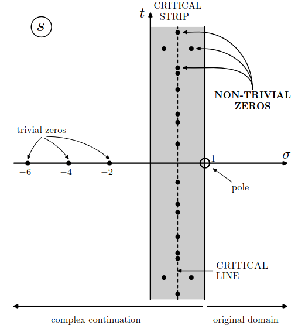

Bernhard Riemann, el complejo matemático
Riemann nació el 17 de septiembre de 1826 en Breselenz, un pequeño municipio del entonces Reino de Hannover. Su padre, pastor luterano en Breselenz, influyó notablemente en su educación. De hecho, Riemann comenzó sus estudios universitarios orientado hacia la teología, con la intención de seguir los pasos de su padre. Sin embargo, pronto descubrió su verdadera vocación por las matemáticas. En 1846 se trasladó a la Universidad de Göttingen, donde tuvo como profesor a Carl Friedrich Gauss, y posteriormente continuó sus estudios en Berlín.
Fue allí donde Riemann conoció a otros grandes matemáticos. En ese momento en Berlín impartían clase grandes nombres como Carl Gustav Jacob Jacobi, Peter Gustav Lejeune Dirichlet, Jakob Steiner, y Gotthold Eisenstein. Sin duda, los años que nuestro estudiante pasó asistiendo a estas clases magistrales influyó en su posterior investigación.
Las contribuciones de Riemann sentaron algunas de las bases de la geometría diferencial moderna, que más de medio siglo después desempeñaría un papel fundamental en la formulación matemática de la relatividad general. En su célebre conferencia de 1854, Riemann propuso una visión profundamente novedosa de la geometría, generalizando las ideas de la geometría euclídea a espacios de un número arbitrario de dimensiones y dotados de una noción de distancia determinada por una métrica. Entre los objetos fundamentales de esta teoría se encuentran la métrica riemanniana y el tensor de curvatura de Riemann, \(R^i_{jkl}\), que permite caracterizar intrínsecamente la curvatura de una variedad en cualquier número de dimensiones.
Riemann también realizó importantes contribuciones a la teoría analítica de números, la rama de la teoría de números que emplea herramientas del análisis matemático para estudiar propiedades de los números enteros. En su artículo Über die Anzahl der Primzahlen unter einer gegebenen Größe, publicado en 1859, estudió la función zeta que hoy lleva su nombre y descubrió una profunda conexión entre sus propiedades y la distribución de los números primos. En este trabajo apareció también una de las conjeturas más famosas de las matemáticas: la hipótesis de Riemann.
Los ceros de la función zeta de Riemann
Detengámonos un momento para entender una función que, a simple vista, parece bastante inocente. La función zeta de Riemann se define, para un número complejo \(s\) con parte real mayor que uno, como
Esta expresión ya había sido estudiada por Leonhard Euler en el siglo XVIII, quien descubrió que la función puede escribirse también como un producto infinito que recorre todos los números primos \(p\)
Riemann fue más allá extendiendo analíticamente esta función al plano complejo, salvo en el caso \(s=1\) donde la función posee un polo simple. Escribiendo \(s=\sigma + it\), siendo \(\sigma\) y \(t\) números reales e \(i\) la unidad imaginaria, la función adquiere una estructura mucho más sugerente: posee unos ceros llamados triviales, situados en los enteros pares negativos, y otros ceros no triviales que se encuentran en la región \(0\leq\sigma\leq1\), conocida como la franja crítica. Además, la ecuación funcional de la función zeta revela una simetría alrededor de la recta \(\sigma=1/2\), conocida como línea crítica. En la figura 1 se representan todas estas regiones. Y es precisamente aquí donde aparece el misterio que hizo famosa a esta función. La distribución de los ceros no triviales es uno de los misterios matemáticos más enigmáticos del pasado siglo y medio. Riemann conjeturó que todos los ceros no triviales de \(\zeta(s)\) tienen la forma
Esta afirmación, aparentemente sencilla de formular, es la famosa hipótesis de Riemann.

La hipótesis del millón de dólares
La hipótesis de Riemann es sencilla: todos los ceros no triviales de \(\zeta(s)\) se encuentran sobre la línea crítica. Detrás de esta aparentemente inocente afirmación se esconde una de las grandes preguntas abiertas de las matemáticas. La razón de su importancia está en la profunda conexión entre los ceros de \(\zeta(s)\) y la distribución de los números primos: cuanto más cerca están estos ceros de la línea crítica, más regular resulta la distribución de los primos alrededor de su comportamiento medio.
La conjetura fue formulada por Riemann en 1859 y, más de un siglo después, en el año 2000, el Clay Mathematics Institute la incluyó entre sus siete Millennium Prize Problems. Cada uno de estos problemas lleva asociado un premio de un millón de dólares para quien consiga demostrarlo o refutarlo. La hipótesis de Riemann continúa sin resolverse: se han comprobado computacionalmente cantidades enormes de ceros y todos los examinados hasta los límites alcanzados satisfacen la conjetura, pero en matemáticas la evidencia numérica no sustituye a una demostración.
Y aquí reside precisamente el reto: no basta con encontrar muchos ceros sobre la línea crítica; habría que demostrar que todos los infinitos ceros no triviales de la función zeta tienen parte real exactamente igual a \(1/2\). Una demostración de esta afirmación no solo resolvería uno de los Problemas del Milenio, sino que proporcionaría una comprensión mucho más profunda de cómo se distribuyen los números primos.
Referencias
- L.J. Garay, Lecture notes: Differential geometry. https://sites.google.com/site/luisjgaray
- The Mathematical Papers of Georg Friedrich Bernhard Riemann (1826-1866). https://www.emis.de/classics/Riemann/
- Riemann, B. (1859). Über die Anzahl der Primzahlen unter einer gegebenen Grösse. Monatsberichte der Berliner Akademie, 136-144. https://doi.org/10.1017/cbo9781139568050.008
- Carroll, S. M.(2003). Spacetime and Geometry: An Introduction to General Relativity. Addison-Wesley. https://doi.org/10.1017/9781108770385
- C.W. Misner, K.S. Thorne, and J.A. Wheeler (1973). Gravitation. W. H. Freeman and Company.
- Schumayer, D. and Hutchinson, D. A. W.(2011). Physics of the Riemann Hypothesis. Rev.Mod.Phys. 83, 307-330. https://doi.org/10.1103/RevModPhys.83.307
-
The Millennium Prize Problems.
if (!document.getElementById('mathjaxscript_pelican_#%@#$@#')) {
var align = "center",
indent = "0em",
linebreak = "false";
if (false) {
align = (screen.width < 768) ? "left" : align;
indent = (screen.width < 768) ? "0em" : indent;
linebreak = (screen.width < 768) ? 'true' : linebreak;
}
var mathjaxscript = document.createElement('script');
mathjaxscript.id = 'mathjaxscript_pelican_#%@#$@#';
mathjaxscript.type = 'text/javascript';
mathjaxscript.src = 'https://cdnjs.cloudflare.com/ajax/libs/mathjax/2.7.3/latest.js?config=TeX-AMS-MML_HTMLorMML';
var configscript = document.createElement('script');
configscript.type = 'text/x-mathjax-config';
configscript[(window.opera ? "innerHTML" : "text")] =
"MathJax.Hub.Config({" +
" config: ['MMLorHTML.js']," +
" TeX: { extensions: ['AMSmath.js','AMSsymbols.js','noErrors.js','noUndefined.js'], equationNumbers: { autoNumber: 'none' } }," +
" jax: ['input/TeX','input/MathML','output/HTML-CSS']," +
" extensions: ['tex2jax.js','mml2jax.js','MathMenu.js','MathZoom.js']," +
" displayAlign: '"+ align +"'," +
" displayIndent: '"+ indent +"'," +
" showMathMenu: true," +
" messageStyle: 'normal'," +
" tex2jax: { " +
" inlineMath: [ ['\\\\(','\\\\)'] ], " +
" displayMath: [ ['$$','$$'] ]," +
" processEscapes: true," +
" preview: 'TeX'," +
" }, " +
" 'HTML-CSS': { " +
" availableFonts: ['STIX', 'TeX']," +
" preferredFont: 'STIX'," +
" styles: { '.MathJax_Display, .MathJax .mo, .MathJax .mi, .MathJax .mn': {color: 'inherit ! important'} }," +
" linebreaks: { automatic: "+ linebreak +", width: '90% container' }," +
" }, " +
"}); " +
"if ('default' !== 'default') {" +
"MathJax.Hub.Register.StartupHook('HTML-CSS Jax Ready',function () {" +
"var VARIANT = MathJax.OutputJax['HTML-CSS'].FONTDATA.VARIANT;" +
"VARIANT['normal'].fonts.unshift('MathJax_default');" +
"VARIANT['bold'].fonts.unshift('MathJax_default-bold');" +
"VARIANT['italic'].fonts.unshift('MathJax_default-italic');" +
"VARIANT['-tex-mathit'].fonts.unshift('MathJax_default-italic');" +
"});" +
"MathJax.Hub.Register.StartupHook('SVG Jax Ready',function () {" +
"var VARIANT = MathJax.OutputJax.SVG.FONTDATA.VARIANT;" +
"VARIANT['normal'].fonts.unshift('MathJax_default');" +
"VARIANT['bold'].fonts.unshift('MathJax_default-bold');" +
"VARIANT['italic'].fonts.unshift('MathJax_default-italic');" +
"VARIANT['-tex-mathit'].fonts.unshift('MathJax_default-italic');" +
"});" +
"}";
(document.body || document.getElementsByTagName('head')[0]).appendChild(configscript);
(document.body || document.getElementsByTagName('head')[0]).appendChild(mathjaxscript);
}

Comentarios
Enviar un comentario
¿Qué te ha parecido? Déjanos tu comentario. Todos los comentarios serán revisados antes de su publicación a fin de mantener un espacio respetuoso, libre de spam y acorde a las normas editoriales.